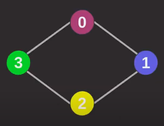
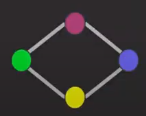
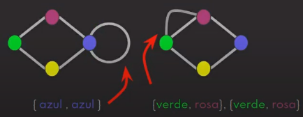

Estrutura de dados
Modelos e exemplos de estruturas de dados
Voltar
Grafos
Estrutura de dados que visa trabalhar com relações entre elementos. Um exemplo de grafo, onde há conexão entre elementos, é um mapa de estações de metrô. Grafos consistem em Vértice (nó), que são os pontos, e Aresta (associação), que são os traços que ligam os nós. A notação matemática é G = (V,A), onde G representa o grafo, V os vértices e A as arestas. A segunda imagem abaixo representa uma matriz de adjacência, no qual também pode-se representar, graficamente, um grafo: Os cabeçalhos das linhas e colunas representam os vértices, e as arestas representadas pelos índices internos na matriz (1 reprensenta que há aresta, 0 reprensenta que não há aresta).


-
Grafo direcionado (dígrafo): Onde há direcionamento específico nas arestas, influenciando no conhecimento/acesso dos vértices (Aresta entre vértices 0 e 1, onde o 0 possui conhecimento/acesso ao 1, mas não o contrário).

-
Grafo não direcionado: Onde não há direcionamento específico nas arestas, ou seja, há conhecimento/acesso de ambos os vértices relacionados (Aresta entre vértices 0 e 1, onde ambos relacionam-se, ou seja, podem ser acessados).

Grau: Quantidade de arestas que saem de um vértice (No grafo não direcionado acima, todos os vértices têm grau 2). Dígrafos diferenciam grau de saída (Arestas que saem do vértice) e grau de entrada (Arestas que chegam no vértice), onde o grau total é a soma de ambos.
Simetria (Dígrafos simétricos): Acontece em dígrafos onde, para cada aresta de entrada tem-se uma aresta de saída, além de não possuir autoloop. Ainda, todo grafo não direcionado é simétrico.

-
Grafo simples: Há somente 1 aresta para o mesmo par de vértices.
 -
Multigrafo: Quando há autoloop (Autoloop é aresta do vértice com ele mesmo) e/ou mais de uma aresta em um mesmo par de vértices.

- Grafo denso:
Elaborado por Mateus Schwede
ubsocial.github.io